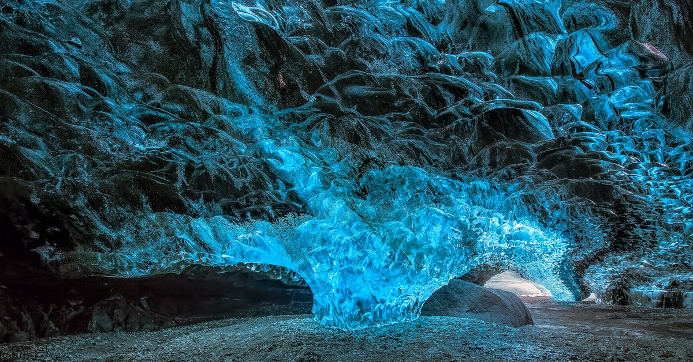

Это островное государство-республика(парламентская, президент - Гвюдни Йоуханнессон), расположенное на западе Северной Европы в северной части Атлантического океана (к северо-западу от Великобритании), на севере и северо-востоке омывается Северным Ледовитым океаном. Исландия - страна, где впервые был основан альтинг(парламент). Территория государства состоит из одноимённого острова площадью 103 тыс. км² и небольших островков около него. Исландия является членом-основателем НАТО и членом Шенгенского соглашения, но не является членом Европейского союза.
Исландия была открыта ирландцами ранее 800 н.э., но долгое время оставалась незаселенной. Заселили в 800-900 годах нашей эры. ХХ век - В результате более чем ста лет мирной борьбы за независимость 1 декабря 1918 года Исландия была объявлена независимым королевством в личной унии с Данией. Исландия не участвовала в Первой мировой войне, но пострадала от пандемии гриппа. Осенью 1918 года около двух третей населения острова переболели испанкой.
Во время Второй мировой войны немецкая оккупация Дании с 9 апреля 1940 года разорвала связь между Данией и Исландией. Месяц спустя военные силы британского флота вошли в Рейкьявикскую гавань, нарушив исландский нейтралитет. Союзническая оккупация Исландии длилась всю войну. В 1941 году ответственность за оккупацию была принята армией США.
17 июня 1944 года Исландия обретает полную независимость и становится республикой. В 1970-е годы состоялась так называемая «тресковая война» за рыболовецкую область. В октябре 2008 года крах банковской системы Исландии едва не привёл к банкротству страны.
Островное государство в северной части Атлантического океана, у Полярного круга, между Гренландией и Норвегией. Почти вся территория страны представляет собой вулканическое плато с вершинами до 2 км., достаточно круто обрывающееся к океану, образуя тысячи фьордов. Многочисленные действующие вулканы (Гекла, Аскья, Лаки и др.), гейзеры, горячие источники, лавовые поля и ледники покрывают собой почти всю территорию страны. Общая площадь Исландии около 103 тыс. кв. км., из них 11,8 тыс. кв. км. покрыто ледниками.
Климат в Исландии морской, субарктический, с сильными холодными ветрами. Лето прохладное, со средней температурой воздуха +10°С. Это обуславливается тем, что Гольфстрим оказывает сильное влияние на климат Исландии. Холодное время года начинается в октябре и длится до апреля. Основное количество годовых осадков выпадает именно в осеннее время. Полярные льды подходят близко к Исландии в зимнее и весеннее время.
Исландская кухня своеобразна и некоторые из национальных блюд могут даже расстроить пищеварение европейцев. Из-за не совсем благоприятных климатических условий и скудности природы особого разнообразия в кухне Исландии нет. Это, в основном, рыба и морепродукты: креветки, семга, морские гребешки, мясо акулы и другое. В последние годы в теплицах стали выращивать овощи. Одним из популярных деликатесов считается маринованный лосось с укропом. Настоящая экзотика для туристов – хакарл – слегка протухшее акулье мясо, созревающее в песке около полугода.
Грандиозный лютеранский храм, который считается одной из самых живописных достопримечательностей Рейкьявика. Ее строили с 1945 по 1986 года.
Музей открылся в 2014 году. Он расположен в старой гавани в пешей доступности от центра Рейкьявика. Коллекция состоит из 23 моделей китов, выполненных в натуральную величину. Экспонаты созданы с удивительной точностью. На близком расстоянии можно разглядеть даже шрамы на шкуре животных. С помощью аттракционов виртуальной реальности посетители могут отправиться в «плавание» с дельфинами и китами.
Мемориал на острове Видей, созданный в память о Джоне Ленноне в 2007 году. Дизайн разрабатывала вдова музыканта Йоко Оно. Колонна представляет собой гранитный пьедестал, на котором на 24 языках выведена надпись «Imagine peace» (представь мир). Из основания вырываются лучи света, в ясную погоду достигающие невероятной высоты в 4 км. Эти струи света создаются с помощью мощных прожекторов.
Геотермальный пляж в пригородной зоне Рейкьявика. Несмотря на то, что даже в июле-августе температура воды в Атлантическом океане не поднимается выше отметки в 15 °C, в прибрежной зоне близ Наутхольсвика она держится на уровне 38-42°C. Просто чтоб из бассейна в холодную воду океана! =))
Экспозиция расположена на открытом воздухе. Она представляет собой реконструкцию прошлого Исландии. Посетители могут увидеть традиционные дома жителей острова, узнать о традициях и повседневных делах людей.
Водопад всего 12 м высоты, но один из самых посещаемых туристами водопадов Исландии. Его ширина — около 30 м.
Удивительное многообразие цветов и прекраснейшее пение птиц. Этот парк открыли в 1912 году, и поначалу он был обычным городским парком, а позднее, в 1957 году, к нему постепенно добавилась ботаническая часть.
Он может работать до 180 дней в году. Курорт располагается совсем близко от Акюрейри. Некоторые считают именно его лучшим горнолыжным курортом в стране. Лыжные трассы высотой 700 метров и новый быстроходный подъемник на четверых Фьяркинн
Он может похвастаться двумя 25-метровыми открытыми бассейнами, джакузи, водными горками, лягушатником, крытым бассейном, четырьмя горячими ваннами, паровой ванной, сауной и огромной территорией. Открыт круглый год.
Построенные в 1865 году торфяные дома в Акюрейри — хорошо сохранившиеся образцы древних жилищ исландцев. Ферма Лёйваус была полностью отреставрирована традиционным способом в начале ХХ века. Она служила домом для более чем двадцати местных жителей.
Водопад высотой 60 метров, где днем можно созерцать двойную радугу.
Самый старый и самый большой гейзер "Золотого кольца" и в Исландии.
Это гордость исландцев – птичий заповедник тупиков. Не менее интересны оригинальные арки и башенки, сформированные океаном и ветром.

Природный объект, изрезанный вулканическими разломами, внесен в список Наследия ЮНЕСКО. Ни один обзор не сможет передать всю красоту этих мест. Здесь находится всемирно известное озеро Желаний и «Каньоне из пенни».

множество естественных ванн с целебной водой из термальных источников и удивительно прекрасные разноцветные горы.
В парке, горы которого теряются в облаках, находится знаменитый Черный Водопад и восхитительный березовый лес.

Живописный горный хребет с тропами, отвесными каньонами, ледниками и местами обитания диких животных.
Лёйгавегюр – знаменитый пеший маршрут, с высшей точкой на пути более чем в 1 тысячу метров. В ходе прогулки, продолжительностью в 2-4 дня, можно увидеть такие достопримечательности Исландии, как ледниковая долина Тоурсмёрк, Исландское плато и Национальный заповедник страны.
Его нередко называют «кровожадным злодеем», т.к. на его счету более 10 тысяч унесенных человеческих жизней.
Известная ледниковая лагуна с айсбергами и местами для наблюдения за тюленями и поморниками. Можно пройтись прямо в огромнейших ледяных пещерах ледников.Толщина льда в среднем равняется 400 метрам, а максимальная достигает 1000 метров.

О стране: https://clck.ru/DLiUi
История: https://clck.ru/akV87
Флаг: https://clck.ru/akUPd
Герб: https://clck.ru/akUQB
Нац.животное: https://clck.ru/akUQR
Краткое содержание: https://clck.ru/akURW
Климат: https://clck.ru/akUUJ
https://dou119-ekb.ru/islandiya-gde-istoriya-islandii-klimat-luchshee-vremya-dlya/
География: https://guide.travel.ru/iceland/geo/
Еда: https://fishki.net/3128652-eda-ne-dlja-slabakov-nacionalynye-bljuda-islandii.html
Достопримечательности Рейкъявика: https://top10.travel/dostoprimechatelnosti-rejkyavika/
Достопримечательности Акюрейри: https://clck.ru/akUYf
https://guidetoiceland.is/ru/luchshee-v-islandii/top-11-chem-zanjatsja-v-akureyri
Годафосс: https://www.votpusk.ru/country/dostoprim_s.asp?CN=IS&CT=IS1&Q=X&P=1
Достопримечательности Исландии: https://clck.ru/akTtS
Ландманналаугар: https://vislandii.ru/attractions/17-gethermal-area/46-landmannalaugar
Йекюльсаурлоун: https://clck.ru/akUag
https://clck.ru/akUbz
Тоурсмёрк: https://clck.ru/akUbK
Скафтафетль: https://multiurok.ru/blog/samye-interesnye-mesta-na-planete.html
Ватнайёкюдль: https://clck.ru/akUhq
Фотографии: https://ru.wikipedia.org/wiki/Годафосс#/media/Файл:Goðafoss_Island.jpg
Cократитель ссылок: https://clck.ru/

{kind=link}